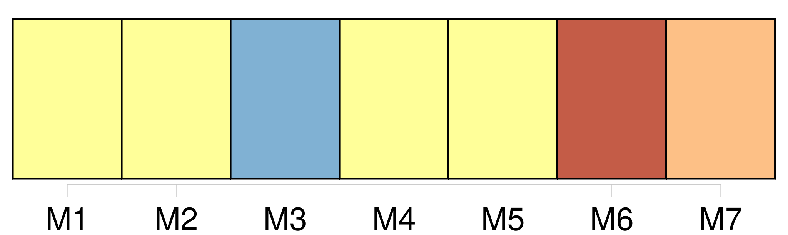
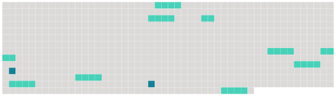

Longueur nb maillons : 11 mentions |
  |
Tout individu né en France d'un étranger, pourra, dans l'année qui suivra l'époque de sa majorité, réclamer [la qualité de Français] ; pourvu que, dans le cas où il résiderait en France il déclare que son intention est d'y fixer son domicile, et que, dans le cas où il résiderait en pays étranger, il fasse sa soumission de fixer en France son domicile, et qu'il l'y établisse dans l'année, à compter de l'acte de soumission. [2 phrases]
Tout enfant né, en pays étranger, d'un Français qui aurait perdu [la qualité de Français] , pourra toujours recouvrer [cette qualité] , en remplissant les formalités prescrites par l'article 9. [15 phrases]
De la Privation des Droits civils par la perte de [la qualité de Français] [1 phrases]
[La qualité de Français] se perdra, 1 ° par la naturalisation acquise en pays étranger ; 2 ° par l'acceptation non autorisée par le Gouvernement, de fonctions publiques conférées par un gouvernement étranger ; 3 ° par l'affiliation à toute corporation étrangère qui exigera des distinctions de naissance ; 4 ° enfin, par tout établissement fait en pays étranger, sans esprit de retour. [2 phrases]
Le Français qui aura perdu [sa qualité de Français] , pourra toujours [la] recouvrer en rentrant en France avec l'autorisation du Gouvernement, et en déclarant qu'il veut s'y fixer, et qu'il renonce à toute distinction contraire à la loi française. [2 phrases]
Si elle devient veuve, elle recouvrera [la qualité de Française] , pourvu qu'elle réside en France, ou qu'elle y rentre avec l'autorisation du Gouvernement, et en déclarant qu'elle veut s'y fixer. [1 phrases]
Les individus qui recouvreront [la qualité de Français] , dans les cas prévus par les articles 10, 18 et 19, ne pourront s' [en] prévaloir qu'après avoir rempli les conditions qui leur sont imposées par ces articles, et seulement pour l'exercice des droits ouverts à leur profit depuis cette époque. [1 phrases]
Le Français qui, sans autorisation du Gouvernement, prendrait du service militaire chez l'étranger, ou s'affilierait à une corporation militaire étrangère, perdra [sa qualité de français] |
 |
La ressource peut être téléchargée sur la page Ortolang
Si vous avez des questions ou vous voyez des erreurs, merci d'envoyer un mail à silvia.federzoni89@gmail.com
Site développé par S. Federzoni (contact)